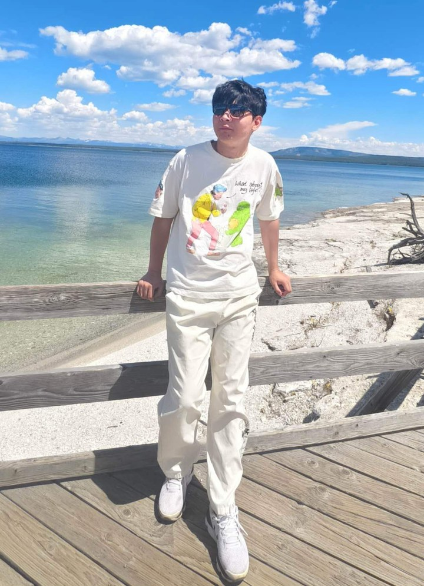

Zhongjie Shi
Visiting Assistant Professor
School of Mathematics, Georgia Institute of Technology
Mathematical foundations of machine learning: approximation, generalization, and optimization
About
I am a Visiting Assistant Professor in the School of Mathematics at the Georgia Institute of Technology, where I work with Prof. Wenjing Liao. I study why modern learning models, such as the Transformers behind large language models, can learn accurately from limited data, and how much data, model capacity, and computation they need. My tools are approximation theory, statistical learning theory, and optimization, and my applications range from scientific computing to privacy and robustness.
I received my Ph.D. in Data Science from City University of Hong Kong in 2022, advised by Prof. Ding-Xuan Zhou, and my B.Sc. in Computing Mathematics, with a minor in Computer Science, from the same university in 2018. Before joining Georgia Tech in 2025, I was a postdoctoral fellow at KU Leuven with Prof. Johan A.K. Suykens (2022–2023) and at the University of Hong Kong with Prof. Yuan Cao (2023–2025).
I am on the academic job market in 2026–2027 and welcome inquiries about tenure-track positions.
News
- Sep 2026Organizer of the 2nd Atlanta Mathematics of Data Science Bootcamp at Georgia Tech, September 19–20.
- Sep 2026New preprints on in-context learning across related tasks and on neural scaling laws of Transformer operator networks.
- Sep 2026Our paper on the learning theory of Transformers via Softmax partition of unity, with Wenjing Liao, is accepted at NeurIPS 2026.
- Jun 2026Our paper on distributed functional optimization over time-varying networks is published in IEEE Transactions on Control of Network Systems.
- Apr 2026Two papers published: generalization of overfitted networks in adversarial training in the SIAM Journal on Mathematics of Data Science, and high-probability convergence for distributed composite optimization with sub-Weibull noise in IEEE Transactions on Automatic Control.
- Jan 2026Our paper on generalization in differentially private gradient descent appears at AAAI 2026, and our paper on distributed composite block mirror descent is published in IEEE Transactions on Automatic Control.
- Dec 2025Two papers published: nonlinear functional regression with kernel embedding in the Journal of Machine Learning Research, and Vision Transformers for hierarchical compositional models in Applied and Computational Harmonic Analysis.
- Aug 2025Joined the School of Mathematics at Georgia Tech as a Visiting Assistant Professor.
Research
Research directions
- Operator learning: learning maps between functions, such as the solution operators of differential equations, from finitely many solved instances. This includes scaling laws for Transformer operator networks and approximation and generalization theory for functional and distribution regression with deep neural networks and kernel methods.
- Neural network approximation and generalization: what deep convolutional networks, Vision Transformers, and Softmax Transformers can represent, and how prediction error scales with model size and sample size, including minimax-optimal rates for nonparametric regression.
- Optimization and neural network training dynamics: high-probability convergence theory for distributed composite optimization under heavy-tailed noise, and how gradient methods with injected noise, such as differentially private gradient descent, acquire features and generalize in two-layer convolutional networks.
- Distributed learning for large-scale data: distributed gradient descent for functional learning with optimal rates, distributed functional optimization over time-varying networks, and decentralized robust kernel-based learning.
- Trustworthy AI: differential privacy and adversarial robustness, including settings in which the noise that protects privacy also prevents memorization, so that privacy and accuracy need not be traded off.
Key questions and representative work
Why do modern learning models generalize well from limited data, both within a single task and across related tasks, and how much data and model capacity do they require? I answer these questions with approximation theory and statistical learning theory, turning them into quantitative scaling laws that say when learning is efficient and when its predictions can be trusted. A single idea runs through my recent work: the attention weights of a Softmax Transformer form a smooth partition of unity, dividing the input space into overlapping neighborhoods and blending simple local approximations into a global one.
Scaling laws for Transformers
The partition-of-unity viewpoint gives model- and data-scaling laws for Softmax Transformers: how accuracy improves with more parameters or more observations, at rates governed by the smoothness and intrinsic dimension of the data. Clipped empirical risk minimization attains minimax-optimal rates, up to logarithmic factors, for nonparametric regression.
NeurIPS 2026 · arXiv:2605.08811Sample-efficient in-context learning
Why can a pretrained Transformer solve a new task from a handful of examples? Treating a task family as clusters of related tasks around representative anchor tasks, I show that shared structure yields a context-sample rate that no longer deteriorates with the input dimension; that cost is shifted to pretraining, where many tasks are available.
arXiv:2609.29060Scaling laws for operator learning
Operator networks learn maps between functions, such as the solution operator of a differential equation. Extending the framework with a doctoral student, we derived model- and data-scaling laws for Transformer operator networks: once inputs are discretized finely enough, accuracy is governed by the number of solved instances and the network size.
arXiv:2609.33533Publications
* corresponding author · † alphabetical author order
Preprints and submitted papers
- Zhongjie Shi, Rongjie Lai, Alexander Cloninger, and Wenjing Liao. Transformers as Cross-Task Learners: Shared Structure Drives Sample Efficiency in In-Context Learning. Submitted, 2026. arXiv
- Haoran Yan, Zhongjie Shi, Yuanze Xi, Peng Chen, and Wenjing Liao. Neural Scaling Laws of Transformer Operator Network. Submitted, 2026. arXiv
- Zhan Yu, Zhongjie Shi, and Ding-Xuan Zhou. Learning Theory of Decentralized Robust Kernel-Based Learning Algorithm. Under review at Journal of Machine Learning Research. arXiv
Journal and conference papers
- Zhongjie Shi* and Wenjing Liao. Learning Theory of Transformers: Local-to-Global Approximation via Softmax Partition of Unity. Advances in Neural Information Processing Systems (NeurIPS), 2026. arXiv
- Zhongjie Shi*, Fanghui Liu, Yuan Cao, and Johan A.K. Suykens. Can overfitted deep neural networks in adversarial training generalize? An approximation viewpoint. SIAM Journal on Mathematics of Data Science, 8(2): 225–256, 2026. DOIarXiv
- Zhongjie Shi, Puyu Wang, Chenyang Zhang, and Yuan Cao. Towards Understanding Generalization in DP-GD: A Case Study in Training Two-Layer CNNs. AAAI Conference on Artificial Intelligence (AAAI), 2026. DOI
- Zhan Yu, Zhongjie Shi, and Deming Yuan. High-Probability Convergence Theory for Distributed Composite Optimization with Sub-Weibull Noises. IEEE Transactions on Automatic Control, 2026. DOI
- Zhan Yu, Zhongjie Shi, Deming Yuan, and Daniel W. C. Ho. Generic Frameworks for Distributed Functional Optimization and Learning Over Time-Varying Networks. IEEE Transactions on Control of Network Systems, 2026. DOI
- Zhan Yu, Daniel W. C. Ho, Deming Yuan, and Zhongjie Shi. Distributed composite optimization with distributed composite block mirror descent. IEEE Transactions on Automatic Control, 2026. DOI
- Zhongjie Shi, Zhiying Fang, and Yuan Cao. Approximation and estimation capability of Vision Transformers for hierarchical compositional models. Applied and Computational Harmonic Analysis, 82: 101849, 2026. DOI
- Zhongjie Shi*, Jun Fan, Linhao Song, Ding-Xuan Zhou, and Johan A.K. Suykens. Nonlinear functional regression by functional deep neural network with kernel embedding. Journal of Machine Learning Research, 26(284): 1–49, 2025. JMLRarXiv
- Zhongjie Shi, Zhan Yu, and Ding-Xuan Zhou. Learning theory of distribution regression with neural networks. Constructive Approximation, 62(1): 61–104, 2025. DOI
- Zhan Yu, Jun Fan, Zhongjie Shi, and Ding-Xuan Zhou. Distributed gradient descent for functional learning. IEEE Transactions on Information Theory, 70(9): 6547–6571, 2024. DOI
- Tong Mao, Zhongjie Shi†*, and Ding-Xuan Zhou. Approximating functions with multi-features by deep convolutional neural networks. Analysis and Applications, 21(1): 93–125, 2023. DOI
- Tong Mao, Zhongjie Shi†, and Ding-Xuan Zhou. Theory of deep convolutional neural networks III: Approximating radial functions. Neural Networks, 144: 778–790, 2021. DOI
- Zhan Yu, Daniel W. C. Ho, Zhongjie Shi, and Ding-Xuan Zhou. Robust kernel-based distribution regression. Inverse Problems, 37(10): 105014, 2021. DOI
Teaching
I view teaching as an interactive process that develops students' understanding and capacity for independent thought: I begin from what students already know, move between pictures, examples, and notation, and ask students to rebuild an argument in a new setting. I would be glad to teach courses from calculus and linear algebra to approximation theory, optimization, and the mathematical foundations of machine learning.
Instructor, Georgia Institute of Technology
| MATH 2551 | Multivariable Calculus | Fall 2026 |
| MATH 2550 | Introduction to Multivariable Calculus | Spring 2026 |
| MATH 1553 | Introduction to Linear Algebra | Fall 2025 |
Selected Talks
Service and Honors
Organization
- Organizer, 2nd Atlanta Mathematics of Data Science Bootcamp, Georgia Tech (September 19–20, 2026)
Reviewing
Journals: Applied and Computational Harmonic Analysis; Journal of Approximation Theory; Analysis and Applications; Applied Numerical Mathematics; IEEE Transactions on Pattern Analysis and Machine Intelligence; IEEE Transactions on Neural Networks and Learning Systems; IEEE Transactions on Automatic Control; Neural Networks; Signal Processing.
Conferences: NeurIPS 2024, 2026; ICLR 2025; AAAI 2026.
Honors and Awards
- Outstanding Research Thesis Award, City University of Hong Kong (one of 8 awardees in 2022)
- HKSAR Government Scholarship (top 2% university-wide), 2017
- HKSAR Government Scholarship Fund – Talent Development Scholarship, 2015
Contact
School of Mathematics
Georgia Institute of Technology
Atlanta, GA 30332, USA
zshi332@gatech.edu